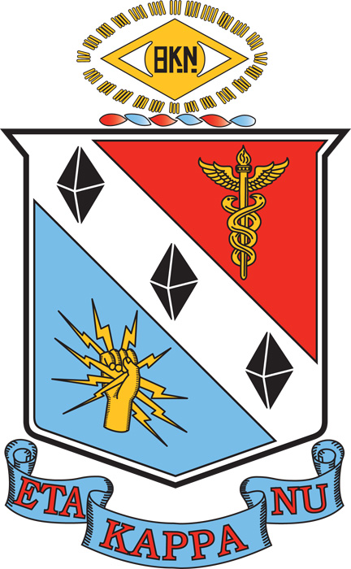

Education and Honors
Education

Northwestern University -- Robert R. McCormick School of Engineering and Applied Science, Class of 2017
Degree: Bachelor of Science in Computer Engineering
GPA: 3.74
Relevant Coursework:
-
Hardware:
- Advanced Digital Design (VHDL)
- Fundamentals of Circuits
- Signals and Systems
- Microprocessor System Design (Intel 8051 microcontroller system)
- Intro Robotics (BASIC STAMP 2 microcontroller)
- Robotics Lab (Python)
- Computer Architecture (VHDL)
- Mechatronics (PIC32 Microcontroller system)
- Embedded System Design and Synthesis
-
Software:
- Fundamentals of Computer Programming (C++)
- Computer Systems (C)
- Computer Systems Software (x86 assembly)
- Data Structures and Management (C#)
- Programming Languages (Racket)
- Design and Analysis of Algorithms
- Machine Learning (Python)
- Computer Vision (MATLAB)
- Computer Networking (C++)
-
Design:
- Design Thinking and Communication I and II
- Microprocessor System Projects I and II
- Engineering System Design I and II
Honors
 Eta Kappa Nu -- Beta Tau chapter
The IEEE Honor Society for electrical and computer engineering
Role: Chapter President (2017 school year)
- Oversaw induction of new members
- Helped lead the chapter's freshman mentorship program
Role: Chapter member (2016-present)
- Inducted with qualifying GPA (top 25% of engineering students)
- Participated in mentorship program as a peer mentor